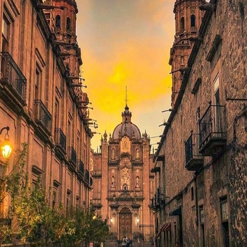

MICHOACAN MEXICO
Capital: Morelia, Numero de habitantes: 4,749 millones (2020) · Superficie:58.599km^2 ·
Municipios: 113
Michoacán, oficialmente llamado Estado Libre y Soberano de Michoacán de Ocampo, es uno de los treinta y un estados que, junto con la Ciudad de México, forman México.Está ubicado en la región oeste del país, limitando al norte con Jalisco y Guanajuato, al noreste con Querétaro, al este con el Estado de México.
